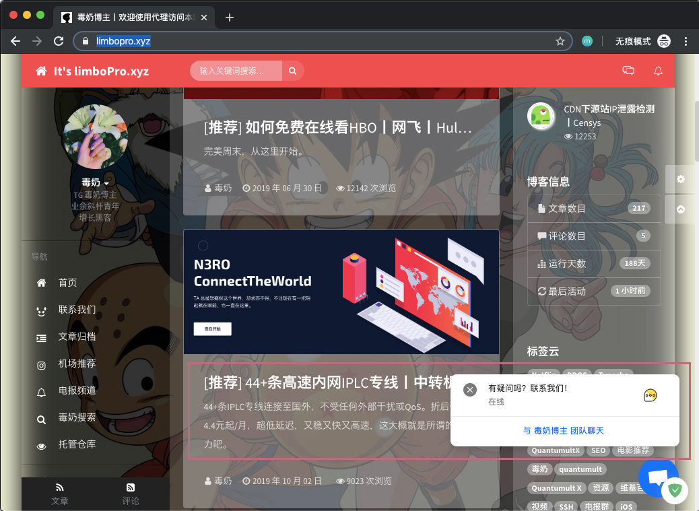
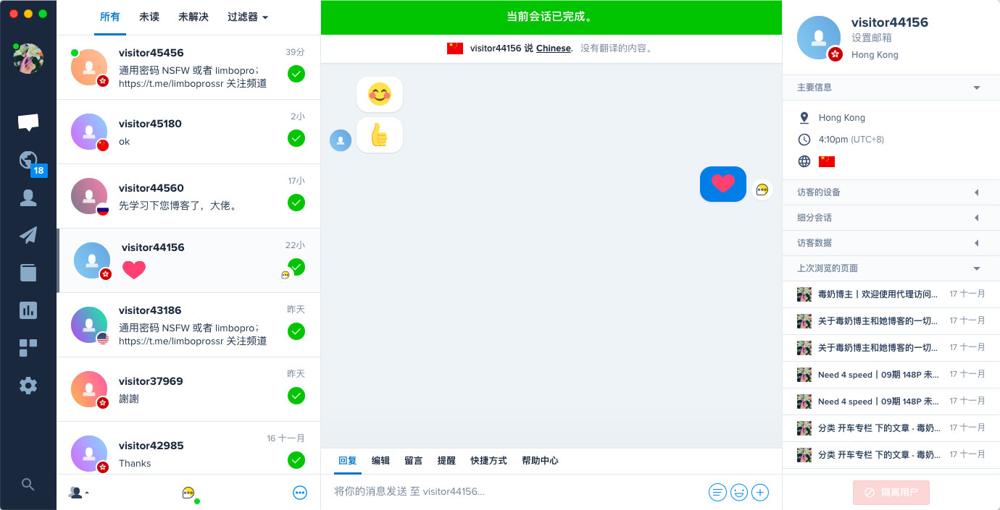
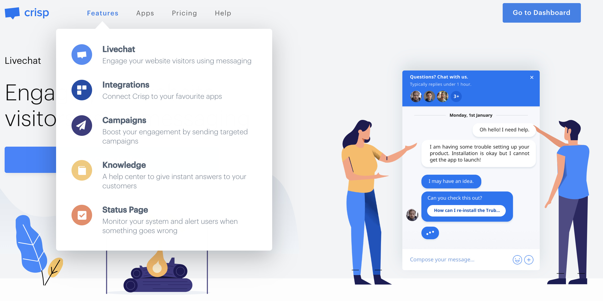
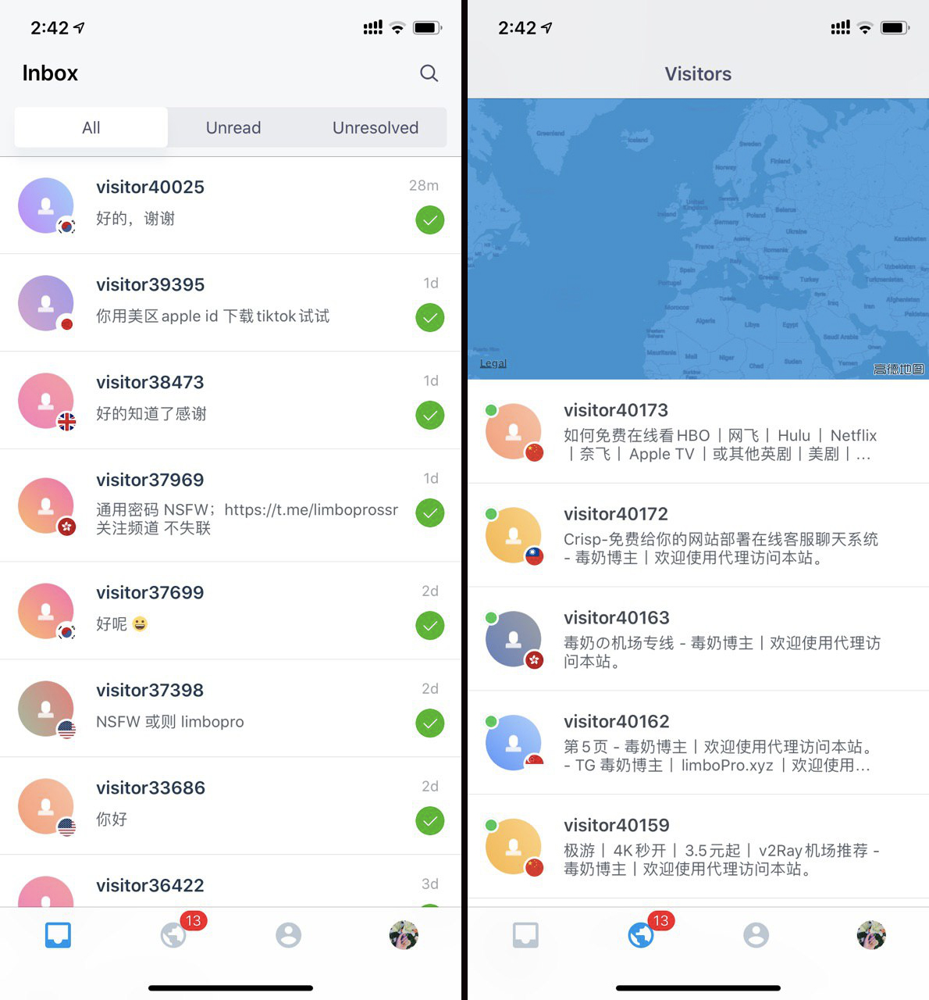
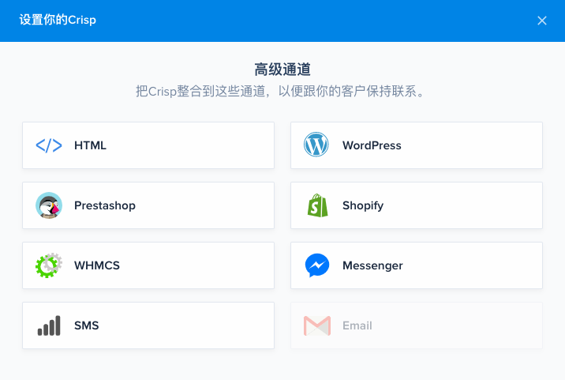
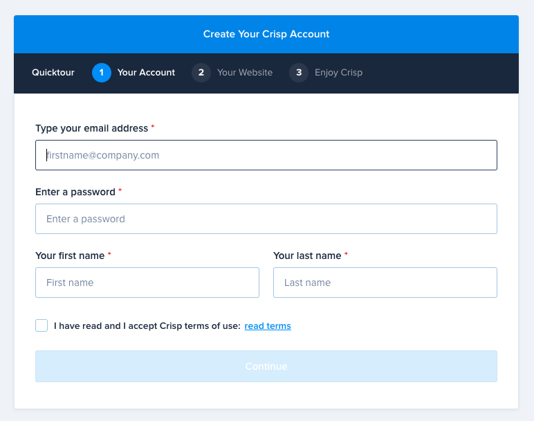
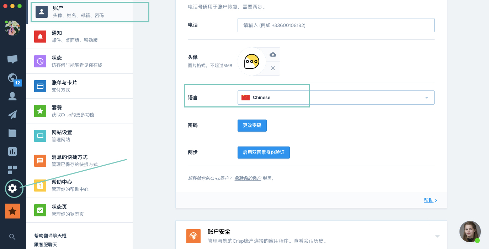
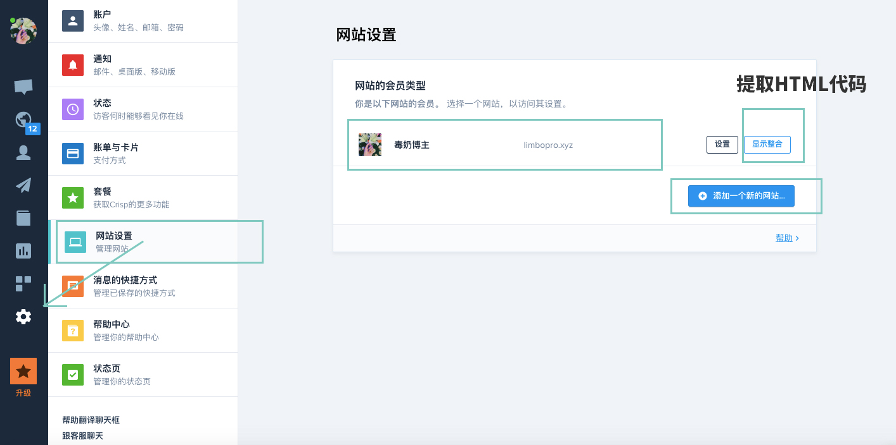
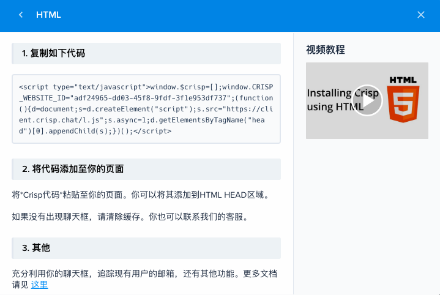

<?xml version="1.0" encoding="UTF-8"?>
<rss version="2.0"
xmlns:content="http://purl.org/rss/1.0/modules/content/"
xmlns:dc="http://purl.org/dc/elements/1.1/"
xmlns:slash="http://purl.org/rss/1.0/modules/slash/"
xmlns:atom="http://www.w3.org/2005/Atom"
xmlns:wfw="http://wellformedweb.org/CommentAPI/">
<channel>
<title>毒奶博主丨欢迎使用代理访问本站。 - 客服</title>
<link>https://limbopro.xyz/tag/客服/</link>
<atom:link href="https://limbopro.xyz/feed/tag/%E5%AE%A2%E6%9C%8D/" rel="self" type="application/rss+xml" />
<language>zh-CN</language>
<description></description>
<lastBuildDate>Thu, 14 Nov 2019 13:23:00 +0800</lastBuildDate>
<pubDate>Thu, 14 Nov 2019 13:23:00 +0800</pubDate>
<item>
<title>Crisp chat-免费给你的网站部署在线客服聊天系统</title>
<link>https://limbopro.xyz/archives/crisp-chat.html</link>
<guid>https://limbopro.xyz/archives/crisp-chat.html</guid>
<pubDate>Thu, 14 Nov 2019 13:23:00 +0800</pubDate>
<dc:creator>毒奶</dc:creator>
<description><![CDATA[主理人推荐序我以前一直在找，后来在厘米云的页面看到，然后给我们博客也部署了，用起来，真香啊（如果你没有给你浏览器使用某些不必要的拦截的话，你现在应该可以在博客右下角看到聊天按钮）；几点使用感受0...]]></description>
<content:encoded xml:lang="zh-CN"><![CDATA[
<p></p><h2>主理人推荐序</h2><p></p><p>我以前一直在找，后来在<a href="../../../archives/2787.html">厘米云</a>的页面看到，然后给我们博客也部署了，用起来，真香啊（如果你没有给你浏览器使用某些不必要的拦截的话，你现在应该可以在博客右下角看到聊天按钮）；</p><h3>几点使用感受</h3><p>0.首先你得有个网站什么的；<br>1.简单部署<code>HTMl代码</code>即可用；<br>2.<code>基础功能免费</code>（完全够用了）；<br>3.<code>iOS</code>/<code>android</code>客户端支持，随时随地与用户畅聊；<br>4.我正在用；<br>5.用上了你就知道有多棒；</p><h2>Crisp 介绍</h2><p></p><p>在你的网站及任意网页内嵌客服聊天框；<br><a href="https://crisp.chat/en/">https://crisp.chat/en/</a> *官网<br><a href="https://app.crisp.chat">https://app.crisp.chat</a> *控制面板</p><h3>移动客户端支持</h3><p>随时随地，与用户畅聊不停；</p><p></p><p>iOS 客户端下载：<a href="https://apps.apple.com/us/app/crisp/id1085770229">AppStore</a> 或应用商店搜索 Crisp；<br>Android 客户端下载：<a href="https://play.google.com/store/apps/details?id=im.crisp.app&hl=en_US">Google play</a> 或使用 <a href="../../../archives/3235.html">Apkpure</a> 下载；</p><h3>Crisp 支持博客类型</h3><p></p><h2>注册与设置中文界面</h2><p>建议使用<code>Gmail</code>进行注册</p><h3>注册</h3><p></p><p>注册地址：<a href="https://app.crisp.chat/initiate/signup/">https://app.crisp.chat/initiate/signup/</a></p><h3>设置中文界面</h3><p></p><p>登陆Crisp后，进入控制面板，如上图操作设置语言为<code>Chinese</code>即可；</p><h2>给网站部署Crisp chat 在线客服系统/插件</h2><p></p><h3>复制HTML代码</h3><p><code>设置</code>-<code>网站设置</code>-<code>显示整合</code>，如果你是Wordpress 则选Wordpress，如果都没有则选择 HTML；其他所有关于Crisp Chat的设置基本上在<code>设置</code>-<code>网站设置</code>这个模块，其他模块大都需要付费；</p><p></p><p>将<em>Crisp代码</em>粘贴至你的页面。你可以将其添加到HTML HEAD区域。如果没有出现聊天框，请清除缓存。</p><p>以上。</p>
]]></content:encoded>
<slash:comments>0</slash:comments>
<comments>https://limbopro.xyz/archives/crisp-chat.html#comments</comments>
<wfw:commentRss>https://limbopro.xyz/feed/archives/crisp-chat.html</wfw:commentRss>
</item>
</channel>
</rss>